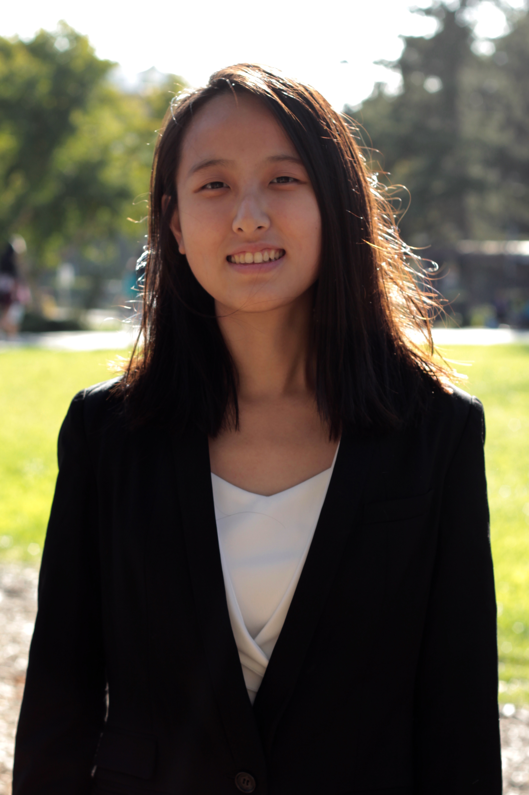

Hi, I am CLoris Zhang, a sophomore at UC Berkeley pursuing a degree in Data Science.
I am passionate about nonprofit consulting. First of all, I am a very helpful person who always
do various kinds of community services. I am ready to devote my time making other people successful.
Also, my mother has a nonprofit consulting company with her professor. I often accompany with her for
work and find it is really rewarding. There are many startup companies with great ideas but limited
resources in the world. They may come up with environmental-friendly air conditioner in the future,
but currently they don’t have much money to make their ideas come true. So, I would gladly provide my
suggestion and give them guidance how to make the best use of their exiting resource for free. If
companies are successful in the future, their products can help change the society positively. As the
companies expand, they create more job opportunities in the society, so that more people can work and
make money. In return, low unemployment rate lessens the burden of country and the public. Thus, nonprofit
consulting can create a virtuous cycle and benefit the society. Even though some companies may not be successful,
it is still worth helping them when they are in need.